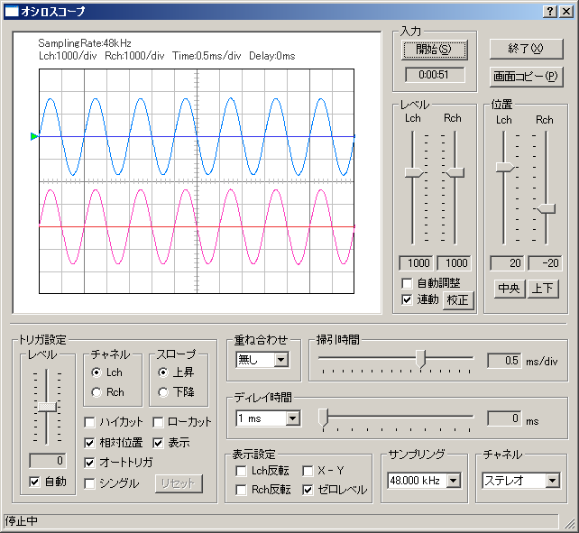

DSSF3 > RA > リファレンス
オシロスコープ
- オシロスコープ機能の説明
オシロスコープ上で波形チェックする場合は、サイン波などの試験信号に対して最初一度歪の無い正しい出力を調整しておけば、2CHを使用してアンプやスピーカー出力信号のみをステレオ測定できます。
パソコンを使用しての2CH測定は、Windowsは2CHといっても、ステレオのように対で１組として、入力デバイスを指定します。これはWindowsの場合、サウンドデバイスとしているので、主に音楽用に、ステレオ入力を標準としているから1CHづつ別々のデバイスを指定することはできません。
そのため若干の工夫をしてデバイス指定はラインインにしておいて、ケーブル接続を工夫して、1CHはパソコンのラインイン入力に、ラインアウトからのシグナルジェネレーターの出力信号を直結して、もう1CHは通常の計測に使用します。通常プリアンプなどではボリュームの調整で、ボリュームつきのパワーアンプなどやボリュームのないパワーアンプなどではそれぞれのケースに応じて、プローブなど抵抗を使用して、出力ボルトをパソコンのラインインの許容範囲である１ボルト以内で、測定を行います。こうすればアンプ波形とスピーカー波形を、両方同時に表示させて比較確認するというようなことが可能です。
DSSF3は16倍のオーバーサンプリング表示機能を持っていますから高い周波数まで の波形表示が正確です。これは波形をドキュメントなどに印刷したり、プレゼンに使用するときにも有効です。
また、画面コピー機能でいくつもの波形を並べて、同時に比較することができます。特にDSSF3のスナップショットはオシロスコープなどの測定画像を画像として、ボタンを押すごとに！１画面ずつ記録できるので、それらのずらっと並べて、一度に波形を比較できます。FFT分析結果を並べて表示したり、波形を比較検討する作業も、非常に簡単に行うことができます。
縦軸が振幅、横軸が時間となります。（X-Y表示時は横軸が左チャネルの振幅、縦軸が右チャネルの振幅です）
画面左の緑の△は、トリガの開始レベルの位置を示しています。

DSSF3 > RA > リファレンス